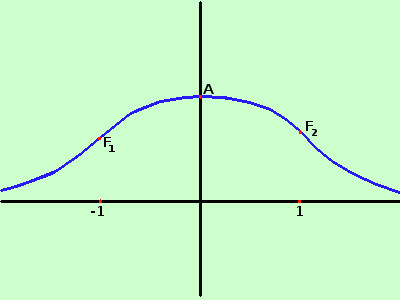

Studio della variabile casuale gaussiana standardizzata
Standardizzata implica che non dipende dall'unita' di misura della variabile
Come esercizio, anche per ripassare un po' di Analisi, e per ricavarne le proprieta' studiamo la funzione
| f(x) = |
1

√(2π) |
e-½x2 |
| f(x) = |
1
√(2π) |
e-½x2 |
Seguiamo lo schema che abbiamo visto in Analisi.
Per i nostri calcoli sappiamo che la costante
1/ √(2π) vale circa 0,3989
- Determinazione del campo di esistenza
Il campo di esistenza e' tutto ℜ
- Determinazione del tipo di funzione
intanto posso dire che e' una funzione pari perche' se sostituisco x con -x non cambia niente (-x)2 = x2, quindi la funzione sara'
simmetrica rispetto all'asse delle y
- Intersezioni con gli assi
Vediamo se esistono intersezioni con l'asse y
faccio il sistema fra la funzione e l'asse y
 y = 1/√(2π) e-½x2
y = 1/√(2π) e-½x2
x = 0
y = 1/√(2π) e-½02
x = 0
essendo e0 = 1
y = 1/√(2π) ≅ 0,3989
x = 0
Quindi la curva taglia l'asse delle y nel punto
A≡(0; 1/√(2π) ) ≅(0; 0,3989)
Vediamo ora se esistono intersezioni con l'asse x
faccio il sistema fra la funzione e l'asse x
y = 1/√2π e-½x2
y = 0
1/√(2π) e-½x2 = 0
x = 0
essendo e-½x2 un esponenziale sara' senpre maggiore di zero, ed essendo
1/√(2π) una costante allora il termine non sara' mai zero, quindi
La curva non taglia l'asse delle x
- Valori agli estremi del campo di esistenza
Siccome il campo di esistenza va da -∞ a + ∞ allora dovremo trovare tali valori con gli asintoti
- Positivita' e negativita'
Risolvo la disequazione
1/√(2π) e-½x2 > 0
essendo 1/√(2π) una costante positiva basta risolvere
e-½x2 > 0
questo essendo un esponenziale e' sempre positivo
la funzione e' sempre positiva (il grafico sara' tutto sopra l'asse delle x)
- Determinazione degli asintoti
Non possono esistere asintoti verticali (la funzione non diventa infinita per valori finiti di x)
Ricerca di eventuali asintoti orizzontali od obliqui
limx→-∞1/√2π e-½x2 = e-∞ = 0
limx→+∞1/√2π e-½x2 = e-∞ = 0
quindi l'asse delle x e' un asintoto orizzontale
y = 0 asintoto orizzontale
ed essendo la curva sempre positiva la curva si avvicina all'asintoto da sopra
- Determinazione della derivata prima
Eseguiamo la derivata prima
1/√(2π) e' una costante quindi resta davanti al risultato
e-½x2 e' una funzione (esponenziale) di funzione ( esponente -½x2)
derivata dell'esponenziale e-½x2
derivata dell'esponente -½ ·2x = -x
Quindi ho la derivata
| y ' = |
- x
√(2π) |
e-½x2 |
- Crescenza e decrescenza
Poniamo la derivata prima maggiore di zero per vedere dove e' positiva (funzione crescente) o negativa (funzione decrescente)
| |
- x
√(2π) |
e-½x2
> 0 |
essendo 1/√(2π) una costante positiva posso scrivere
- x e-½x2
> 0
l'esponenziale e' sempre positivo, quindi scrivo
- x > 0
ed ottengo
x < 0
La derivata e' positiva per x < 0 ed e' negativa per x > 0, quindi
la funzione e' crescente per x < 0 ed e' decrescente per x > 0
- Determinazione dei massimi e minimi
senza risolvere equazioni, essendo la funzione crescente per x < 0 e decrescente per x > 0 allora il punto corrispondente ad x=0 e' un massimo
Corrisponde al punto A di intersezione con l'asse y
A = M ≡(0; 1/√(2π) ) ≅(0; 0,3989)
- Determinazione della derivata seconda
eseguiamo la derivata della derivata prima:
non considerando la costante 1/√(2π) e' un prodotto di funzioni -x ed e-½x2, quindi
y '' = 1/√(2π)[ -1 ·e-½x2 -x ·(- x e-½x2)]
y '' = 1/√(2π)[ -1 ·e-½x2 + x2 e-½x2)]
y '' = 1/√(2π)[ e-½x2 ( x2 - 1)]
ottengo
| y '' = |
x2-1
√(2π) |
e-½x2 |
- Concavita' convessita' e flessi
pongo la derivata seconda uguale a zero
x2-1
√(2π) |
e-½x2 |
= 0 |
essendo √(2π) una costante ed essendo l'esponenziale per definizione sempre positivo la mia equazione si riduce a
x2-1 = 0
ottengo quindi due soluzioni
x = -1 ed x = 1
ora studio il segno della mia funzione
x2-1
√(2π) |
e-½x2 |
> 0 |
anche qui, essendo √(2π) una costante ed essendo l'esponenziale per definizione sempre positivo la mia disequazione si riduce a

x2-1 > 0
essendo le soluzioni -1 ed 1 la mia disequazione e' verificata per valori esterni
| _____________ -1 _____________ +1 _______________ |
| + + + + + 0 - - - - - - - - - - - 0 + + + + + + + |
Quindi posso dire che
Da -∞ a -1 la concavita' e rivolta verso l'alto
da -1 ad 1 la concavita' e rivolta verso il basso
da 1 a +∞ la concavita' e' rivolta verso l'alto
inoltre posso dire che per x=-1 e per x=1 avremo due flessi:
calcoliamo il valore dei punti di flesso
per x = -1 abbiamo
y = 1/√(2π) e-½(-1)2 =
1/√(2π) e-½
per x = 1 abbiamo
y = 1/√(2π) e-½(1)2 =
1/√(2π) e-½
Primo punto di flesso F1 ≡(-1; 1/√(2π) e-½) ≅ (-1; 0,2419)
Secondo punto di flesso F2 ≡(1; 1/√(2π) e-½) ≅ (1; 0,2419)
Ci accontentiamo dei punti di flesso senza fare ulteriori calcoli (complicati) per individuare le equazioni delle tangenti di flesso
A destra il grafico della nostra funzione, per rappresentarla meglio l'unita' di misura sulle y e' diversa da quella sulle x
Siccome nella forma richiama una campana e' chiamata anche "Curva a campana di Gauss"
| .